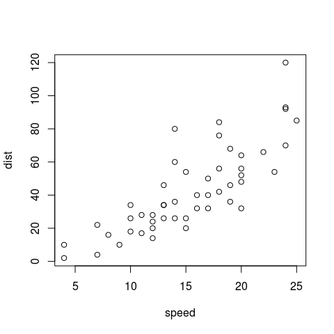
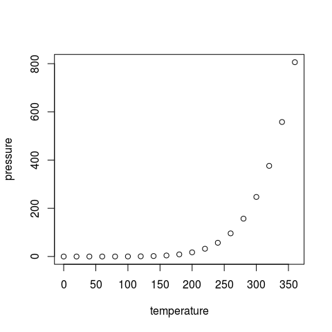

This is an R Markdown document. Markdown is a simple formatting syntax for authoring HTML, PDF, and MS Word documents. For more details on using R Markdown see http://rmarkdown.rstudio.com.
When you click the Knit button a document will be generated that includes both content as well as the output of any embedded R code chunks within the document. You can embed an R code chunk like this:
You can also embed plots, for example:
plot(cars)
plot(pressure)
Note that the echo = FALSE parameter was added to the code chunk to prevent printing of the R code that generated the plot.
\[E = mc^2\]